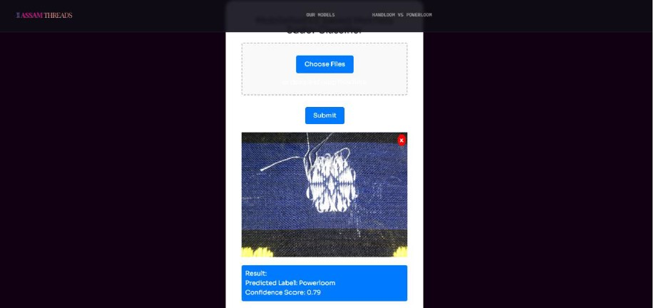
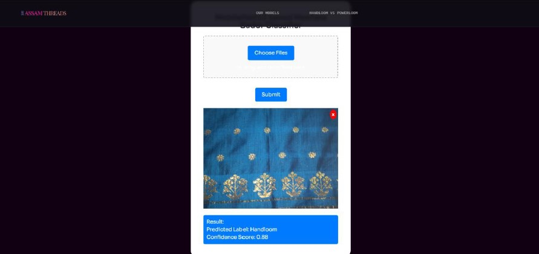
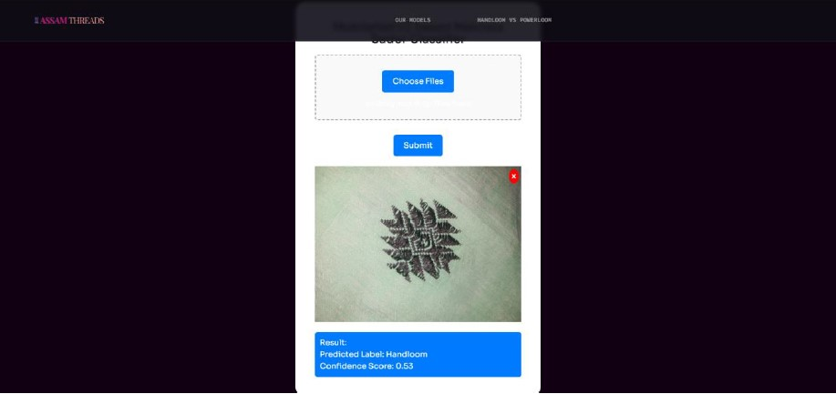

ASSAM THREADS
Assam Threads is a cutting-edge web application designed to classify Mekhela Sador textiles, distinguishing between handloom and powerloom variants with remarkable accuracy
Mekhela Sador, an integral part of Assamese culture, demands a meticulous approach to ensure the authenticity and quality of the fabric. This website harnesses the power of advanced machine learning models to automate and enhance the classification process, providing users with a reliable tool to verify the origin of their Mekhela Sador.Through Assam Threads, users can easily upload images of their Mekhela Sador and receive a classification result based on these sophisticated models. This platform aims to preserve the cultural heritage of Assam while leveraging modern technology to ensure the authenticity and quality of its traditional textiles.
Available Models:
Custom CNN Architecture: This model is specifically designed for the Mekhela Sador classification task. Leveraging convolutional neural networks (CNNs), it automatically learns feature representations crucial for identifying subtle differences in textile patterns. The custom CNN architecture excels in capturing intricate details, making it ideal for distinguishing between handloom and powerloom fabrics.
VGG16: A widely recognized deep learning model, VGG16 is known for its depth and performance in image recognition tasks. Its pre-trained layers and extensive architecture allow it to efficiently classify Mekhela Sador textiles, utilizing its robust feature extraction capabilities to deliver precise results.
MobileNetV2: This model is optimized for mobile and embedded vision applications. MobileNetV2 combines efficiency and accuracy, making it a versatile choice for on-the-go classification. Its lightweight nature does not compromise its ability to differentiate between handloom and powerloom Mekhela Sador, providing a quick and reliable solution.
Technologies Used:
- Numpy
- Pandas
- Matplotlib
- Keras
- Tensorflow
- Scikit Learn
- Vite
- React.js
- Tailwind CSS
- Flask
Log in & Homepage:
The Different Models:

Custom built CNN Model

MobileNetV2 Model

VGG16 Model